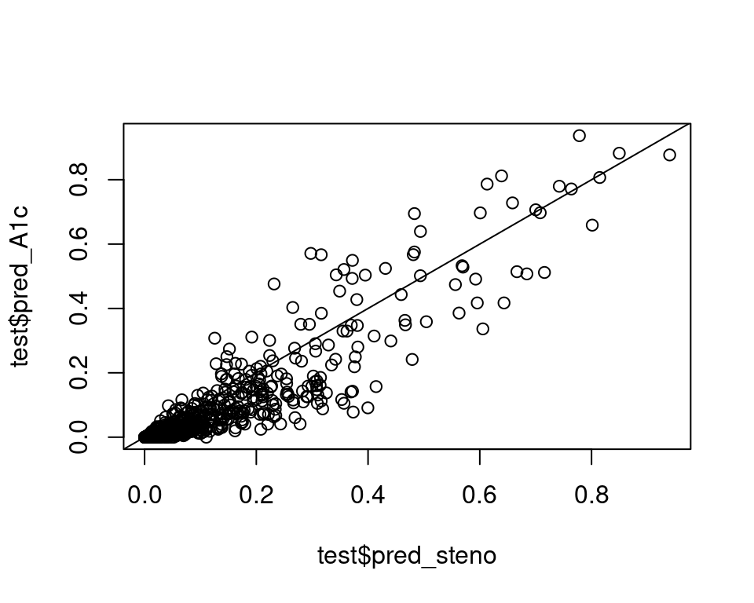
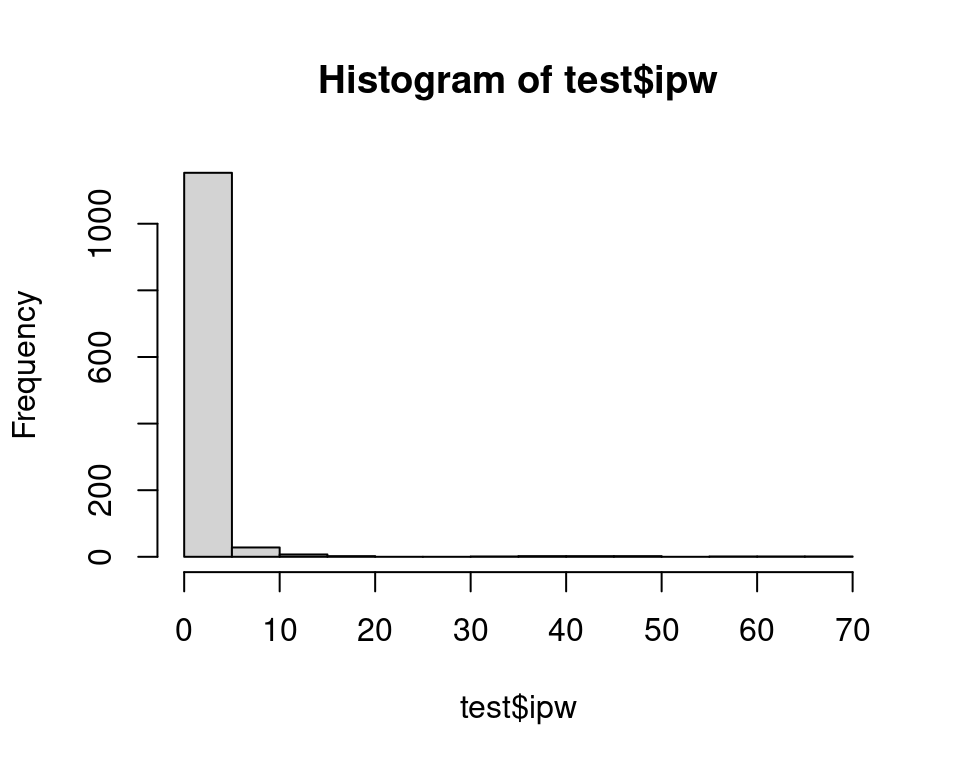
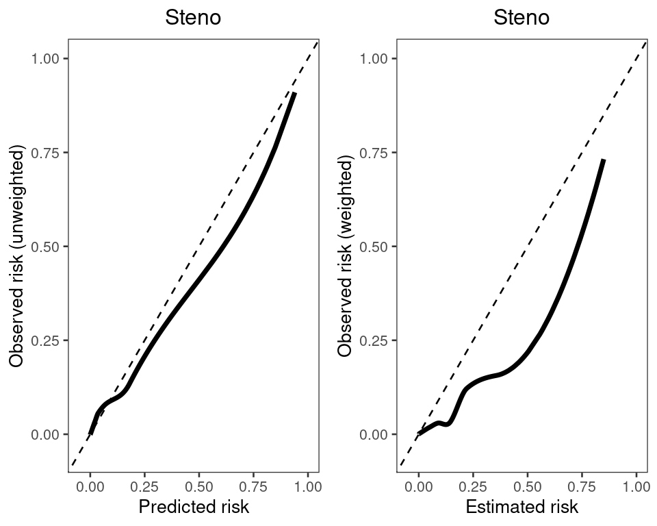
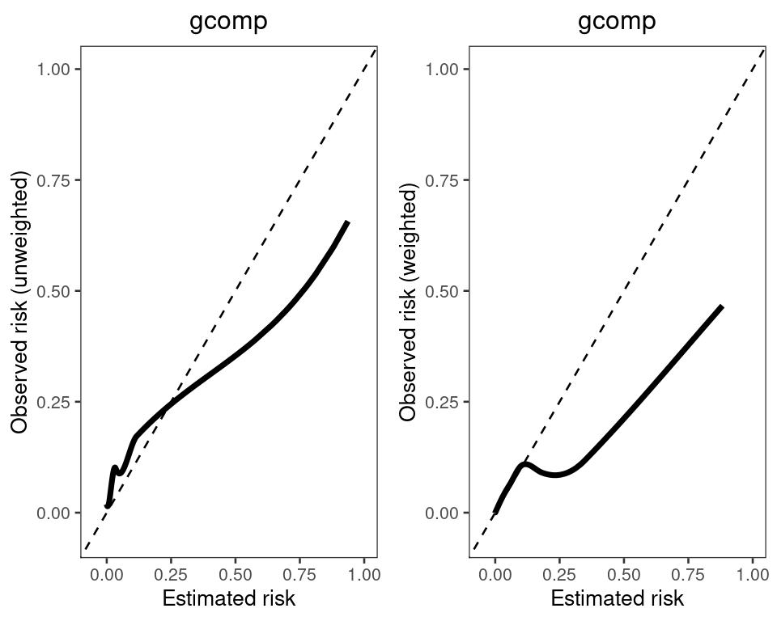

train <- readRDS(url("https://smartbiomed.github.io/causal-prediction-course/data/exercises/data/type1-diabetes-train.rds"))
test <- readRDS(url("https://smartbiomed.github.io/causal-prediction-course/data/exercises/data/type1-diabetes-train.rds"))Practical day 3 afternoon: evaluation of causal prediction models
Aims
Learn how to evaluate the counterfactual performance of a prediction model using inverse probability weighting.
Compare counterfactual performance of a regular prediction model (developed on day 1) to the counterfactual performance of a causal prediction model you developed in the morning of day 3.
Data preparation
1 Read the train and test data into R
2a. Fit the (non-causal) steno prediction model you fitted on day 1 to the train set and use it to make predictions on the test set.
steno_model <- glm(cvd_5year ~ sex_male + age + diabetes_duration + smoking + motion +
HBA1C_0 + urine_albumin_0 + LDL_0 + SBP_0 + eGFR_0,
data = train, family = "binomial")
test$pred_steno <- predict(steno_model, newdata = test, type = "response" )2b. Also fit the causal prediction model you fitted this morning to the train set using g-computation (where you used two separate outcome models) and use it to make predictions on the test set under the intervention of initiating statins. See morning exercise 5c.
mod_A1 <- glm(cvd_5year~LDL_0 + motion + steno_prs + sex_male + age + diabetes_duration + smoking + SBP_0, data=train[train$statin==1, ], family = "binomial")
test$pred_A1c <- predict(mod_A1, newdata=test, type="response")2c. Compare the predictions from both models in a scatterplot. Which one is lowest on average?
plot(test$pred_steno,test$pred_A1c)
abline(0,1)
mean(test$pred_steno)-mean(test$pred_A1c)[1] 0.0225914#scatterplot shows big difference for some patients. On average predictions from the causal model assuming statin initiation are a bit lower than those from steno model.Regular performance assessment
3a. First assess regular performance of both models in the test set by calculating Brier score. Note that on day 1 we used the function riskRegression::Score to calculate Brier score.
#calculate Brier score of steno model and g-comp model trough Score function
y <- riskRegression::Score(list("Steno model" = steno_model, "g-comp statins" = test$pred_A1c),
data = test,
formula = cvd_5year~1,
plots = "calibration"
)
y$Brier
Results by model:
model Brier lower upper
<fctr> <char> <char> <char>
1: Null model 6.682 5.310 8.054
2: Steno model 5.103 4.082 6.125
3: g-comp statins 5.341 4.174 6.507
Results of model comparisons:
model reference delta.Brier lower upper p
<fctr> <fctr> <char> <char> <char> <num>
1: Steno model Null model -1.578 -2.308 -0.849 2.237255e-05
2: g-comp statins Null model -1.341 -2.022 -0.660 1.135379e-04
3: g-comp statins Steno model 0.237 -0.120 0.595 1.933189e-013b. Verify that the ‘manual function’ below gives the same point estimate for Brier score as the Score function.
brier_steno <- 1/nrow(test) * sum ((test$pred_steno - test$cvd_5year)^2)
brier_gcomp <- 1/nrow(test) * sum ((test$pred_A1c - test$cvd_5year)^2)
c(brier_steno, brier_gcomp)[1] 0.05103465 0.053408573c. Which of the two models appears to perform better on the observed data distribution, judging from the point estimates of Brier score?
# the g-comp model that targets risk with statin initiation performs slightly worse (higher Brier score) than the regular Steno modelCounterfactual performance assessment
Now we continue with counterfactual performance of both models in the test set.
4a. Assuming that the test data are obtained from the same setting as the train data, what variables are in \(L\) and need to be adjusted for when assessing performance?
# Answer: same as before: The $L$ variables (confounders of statin use and the outcome) are LDL_0, motion, steno_prs. (See exercises morning day 3).4.b Calculate inverse probability weights for use of statins in the test set and make a histogram to assess the distribution of the weights.
#treatment model
mod_ps <- glm(statin ~ LDL_0 + motion + steno_prs, data=test,family="binomial")
#obtain weights
pi_L <- predict(mod_ps, newdata = test, type = "response")
test$ipw <- ifelse(test$statin==1, 1/pi_L, 1/(1-pi_L))
#histogram
hist(test$ipw)
5a. Calculate counterfactual Brier score for both candidate models under the scenario where all patients in the test set would initiate statins using inverse probability weighting. You can use a weighted version of the earlier given manual code for the Brier score.
brier_steno_ipw <- 1/nrow(test) * sum ((test$pred_steno - test$cvd_5year)^2 * (test$statin==1) * test$ipw )
brier_steno_ipw[1] 0.03709118# note that the steno model performs somewhat worse according to the counterfactual Brier than according to the regular Brier
brier_gcomp_ipw <- 1/nrow(test) * sum ((test$pred_A1c - test$cvd_5year)^2 * (test$statin==1) * test$ipw )
brier_gcomp_ipw[1] 0.036505095b. Compare results from both models. Which one seems to perform better in a treated scenario?
# The gcomp model accounting for statin initiation has slightly better (i.e. lower) Brier than the steno model now6. Calculate a calibration curve for the Steno model, once in the regular way and once using weighted observed risks tailored to a scenario with statin initiation. We again provide manual code in the solutions, which you could compare to the Score output from day 1. Note our manual code here uses a loess smoother while Score uses a nearest neighbor smoother by default).
loess_steno_reg <-
loess(cvd_5year ~ pred_steno, data = test)
loess_steno_ipw1 <-
loess(cvd_5year ~ pred_steno, data=test[test$statin == 1, ], weights = ipw)
curve_steno_reg <- predict(loess_steno_reg, newdata = test$pred_steno, type = "response")
curve_steno_ipw <- predict(loess_steno_ipw1, newdata = test$pred_steno, type = "response")
# plot calibration curve
cal_data_steno <- as.data.frame(cbind(x = test$pred_steno, y_reg = curve_steno_reg, y_ipw = curve_steno_ipw))
library(ggplot2)
p_steno_reg <-
ggplot(data = cal_data_steno, aes(x = x, y = y_reg),) +
geom_line(linewidth = 1.25) +
geom_abline(slope = 1, linetype = "dashed") +
theme_bw(base_size = 10) +
theme(panel.grid = element_blank(), plot.title = element_text(hjust = 0.5)) +
scale_y_continuous(breaks = seq(0, 1, 0.25), limits = c(-0.05, 1)) +
scale_x_continuous(breaks = seq(0, 1, 0.25), limits = c(-0.05, 1)) +
labs(
title = "Steno",
x = "Predicted risk",
y = "Observed risk (unweighted)"
)
p_steno_ipw <-
ggplot(data = cal_data_steno, aes(x = x, y = y_ipw),) +
geom_line(linewidth = 1.25) +
geom_abline(slope = 1, linetype = "dashed") +
theme_bw(base_size = 10) +
theme(panel.grid = element_blank(), plot.title = element_text(hjust = 0.5)) +
scale_y_continuous(breaks = seq(0, 1.00, 0.25), limits = c(-0.05, 1.00)) +
scale_x_continuous(breaks = seq(0, 1.00, 0.25), limits = c(-0.05, 1.00)) +
labs(
title = "Steno",
x = "Estimated risk",
y = "Observed risk (weighted)"
)
library(cowplot)
plot_grid(p_steno_reg, p_steno_ipw)
7. Now calculate a calibration curve for the gcomp model, once in the regular way and once using weighted observed risks, tailored to a scenario with statin initiation.
loess_gcomp_reg <-
loess(cvd_5year ~ pred_A1c, data = test)
loess_gcomp_ipw1 <-
loess(cvd_5year ~ pred_A1c, data=test[test$statin == 1, ], weights = ipw)
curve_gcomp_reg <- predict(loess_gcomp_reg, newdata = test$pred_A1c, type = "response")
curve_gcomp_ipw <- predict(loess_gcomp_ipw1, newdata = test$pred_A1c, type = "response")
# plot calibration curve
cal_data_gcomp <- as.data.frame(cbind(x = test$pred_A1c, y_reg = curve_gcomp_reg, y_ipw = curve_gcomp_ipw))
p_gcomp_reg <-
ggplot(data = cal_data_gcomp, aes(x = x, y = y_reg),) +
geom_line(linewidth = 1.25) +
geom_abline(slope = 1, linetype = "dashed") +
theme_bw(base_size = 10) +
theme(panel.grid = element_blank(), plot.title = element_text(hjust = 0.5)) +
scale_y_continuous(breaks = seq(0, 1, 0.25), limits = c(-0.05, 1)) +
scale_x_continuous(breaks = seq(0, 1, 0.25), limits = c(-0.05, 1)) +
labs(
title = "gcomp",
x = "Estimated risk",
y = "Observed risk (unweighted)"
)
p_gcomp_ipw <-
ggplot(data = cal_data_gcomp, aes(x = x, y = y_ipw),) +
geom_line(linewidth = 1.25) +
geom_abline(slope = 1, linetype = "dashed") +
theme_bw(base_size = 10) +
theme(panel.grid = element_blank(), plot.title = element_text(hjust = 0.5)) +
scale_y_continuous(breaks = seq(0, 1.00, 0.25), limits = c(-0.05, 1.00)) +
scale_x_continuous(breaks = seq(0, 1.00, 0.25), limits = c(-0.05, 1.00)) +
labs(
title = "gcomp",
x = "Estimated risk",
y = "Observed risk (weighted)"
)
plot_grid(p_gcomp_reg, p_gcomp_ipw)